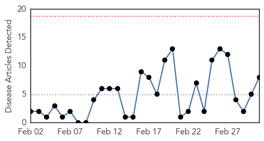
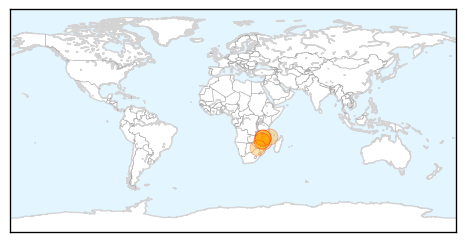
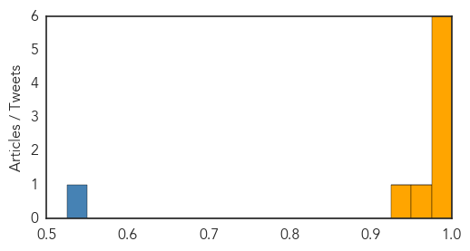
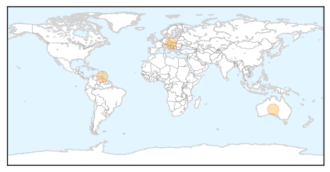
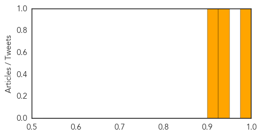

Cholera
30-Day Web Trend
0 alerts, 0 warnings

30-Day Twitter Trend
5 alerts, 0 warnings

Article Locations
Article Confidences
Top Articles:
- 0.996
- WHO intensifies support to cholera outbreak in Malawi and Mozambique
- 0.996
- WHO intensifies support to cholera outbreak in Malawi and Mozambique - Malawi
- 0.996
- WHO intensifies support to cholera outbreak in Malawi and Mozambique
- 0.996
- Mozambique cholera death toll rises to 41
- 0.980
- Southern Africa Weekly Report Map, 24th February to 2nd March 2015 - Malawi
- 0.976
- Cholera fears as two kids quarantined
- 0.966
- Cholera fears as Zimbabwe health authorities quarantine two children
- 0.926
- Malawi: WHO intensifies support to cholera outbreak in Malawi and Mozambique
Top Tweets:
- 0.837
- RT: WHO intensifies support to cholera outbreak in Malawi & Mozambique Health http://t.co/gcyx2fkZGw
Chikungunya
30-Day Web Trend
1 alerts, 0 warnings

30-Day Twitter Trend
1 alerts, 0 warnings

Article Locations
Article Confidences
Top Articles:
Top Tweets:
-
No tweets found for Mar 03, 2015